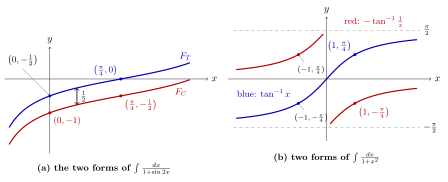
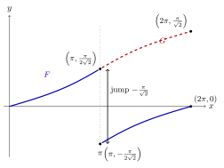
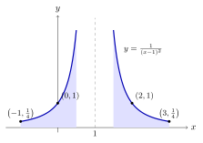

8.7 Other Methods of Integration¶
Guiding question
In practice an integral is often not done by hand at all: it is looked up in a table of integrals, or typed into a computer algebra system. Both are legitimate and fast, and both can mislead a careless user. A table lists a formula only for a particular form, with conditions on the constants; a computer algebra system prints a formula that may differ from yours by a constant, may omit absolute values, and may be wrong at one point of the interval you care about. This section teaches how to use these tools and how to trust them: how to match an integral to a table entry, how to prepare it by a substitution, by completing the square or by a reduction formula, how to compare two answers that look different, and why a definite integral computed from a formula needs a second look when the formula has a break. Every table entry that we use is proved by differentiation, and every computer result in the examples is checked the same way.
By the end of this section you should be able to:
-
match an integral to the form of a table entry, read off the constants, and check the conditions under which the entry holds;
-
prepare an integral for a table by a substitution, by completing the square, or by one or more steps of a reduction formula;
-
decide whether your answer and the answer of a table or a computer algebra system are the same, and find the constant by which they differ;
-
read the output of a computer algebra system critically: a missing constant, a missing absolute value, a formula valid on only part of the interval, a form that is undefined at a point where the integrand is fine;
-
evaluate a definite integral from a formula whose graph has a jump (Theorem 8.7.14), and recognize a definite integral that cannot be evaluated by the Fundamental Theorem of Calculus at all;
-
say plainly that a table entry or a computer result is a claim and not a proof, and check it by differentiating.
Three families of methods¶
Sections 8.1 to 8.5 were analytical methods: pencil-and-paper manipulations that end in a formula. This section adds two more ways of reaching a formula, and a third kind of answer.
| Method | What you get | What can go wrong |
|---|---|---|
| by hand (8.1–8.5) | a formula | an algebra or sign error |
| table of integrals | a formula, for a standard form | the wrong match of constants; a condition missed; a misprint |
| computer algebra | a formula, a special function, or nothing | a missing constant or absolute value; a formula with a break; a different form that you do not recognize |
| numerical integration | a number (for a definite integral) | no formula at all; an error that must be bounded |
A table and a computer algebra system are both ways of finding a candidate \(F\). They differ from the methods of the earlier sections only in that someone else did the work. The next section takes up numerical integration; Calculus I and the earlier sections are all that is needed here.
A table or a computer result is not a proof
Looking up an integral, or asking a program, produces a claim: “\(F\) is an antiderivative of \(f\) on this interval”. The claim becomes a fact when you differentiate \(F\) and obtain \(f\) (Theorem 8.6.2(1)). A table is written by people and may contain a misprint, may state its conditions in a footnote, or may be copied with a constant interchanged; a program may print a form valid on only part of the domain. In this section every table entry is proved by differentiation (Theorem 8.7.1), and every integral in an example, whatever its source, is checked by differentiating the answer. Where a definite integral comes from a formula, we also check that the formula is continuous on the interval (Theorem 8.7.14) and that the number has the right sign and size.
A table of integrals¶
A table of integrals is a list of formulas \(\int f(x)\,dx=F(x)+C\), grouped by the form of \(f\): roots of a linear function, roots of \(x^2\pm a^2\), trigonometric functions of a linear argument, products of a power and an exponential or a sine, and so on. Large tables have hundreds of entries; we use a small one. Together with the basic formulas of Section 8.1 (formulas (1)–(17)), the inverse-trigonometric and logarithmic integrals of Sections 8.2 and 8.4, and the reduction formulas of Sections 8.2, 8.3, 8.4 and 8.6, it is enough for every example here. The letters \(a\) and \(b\) are constants, and each entry holds on every interval on which both sides are defined.
Theorem 8.7.1: A short table of integrals
Write \(s=\sqrt{ax+b}\) in (T1)–(T4) and \(s=\sqrt{x^2+a^2}\) in (T6), (T7). Then
-
\(\displaystyle\int\frac{x}{ax+b}\,dx=\frac xa-\frac b{a^2}\ln\lvert ax+b\rvert+C\), where \(a\ne0\);
-
\(\displaystyle\int\frac{x}{\sqrt{ax+b}}\,dx=\frac{2(ax-2b)}{3a^2}\,\sqrt{ax+b}+C\), where \(a\ne0\) and \(ax+b>0\);
-
\(\displaystyle\int\frac{dx}{x\sqrt{ax+b}}=\frac1{\sqrt b}\ln\left\lvert\frac{s-\sqrt b}{s+\sqrt b}\right\rvert+C\), where \(b>0\), \(x\ne0\) and \(ax+b>0\);
-
\(\displaystyle\int\frac{dx}{x\sqrt{ax+b}}=\frac2{\sqrt{-b}}\tan^{-1}\frac{s}{\sqrt{-b}}+C\), where \(b<0\) and \(ax+b>0\);
-
\(\displaystyle\int\frac{dx}{1+\sin ax}=-\frac1a\tan\left(\frac\pi4-\frac{ax}2\right)+C\), where \(a\ne0\), on any interval on which \(\sin ax\ne-1\);
-
\(\displaystyle\int\sqrt{x^2+a^2}\,dx=\frac x2\sqrt{x^2+a^2}+\frac{a^2}2\ln\left(x+\sqrt{x^2+a^2}\right)+C\), where \(a>0\);
-
\(\displaystyle\int\frac{dx}{x\sqrt{x^2+a^2}}=-\frac1a\ln\frac{a+\sqrt{x^2+a^2}}{\lvert x\rvert}+C\), where \(a>0\) and \(x\ne0\).
Proof. In each case we differentiate the right side and obtain the integrand, which proves the entry (Theorem 8.6.2(1)).
(T1) By the Chain Rule, \(\frac d{dx}\ln\lvert ax+b\rvert=\frac a{ax+b}\), so
(T2) Here \(s=\sqrt{ax+b}\), \(s^2=ax+b\) and \(s'=\frac a{2s}\). By the Product Rule,
(T3) Let \(b>0\). Since \(s^2=ax+b\), we have \(s^2-b=ax\) and \(x\ne0\) means \(s\ne\sqrt b\). Also \(s+\sqrt b>0\). For the logarithm of a quotient, \(\ln\left\lvert\frac{s-\sqrt b}{s+\sqrt b}\right\rvert=\ln\lvert s-\sqrt b\rvert-\ln(s+\sqrt b)\), and \(\frac d{dx}\ln\lvert w\rvert=\frac{w'}w\) for \(w\ne0\) of either sign (Section 8.1). With \(s'=\frac a{2s}\),
Multiplying by \(\frac1{\sqrt b}\) gives \(\frac1{xs}\).
(T4) Let \(b<0\) and \(\beta=\sqrt{-b}>0\), so \(s^2=ax-\beta^2\); \(ax+b>0\) gives \(ax>\beta^2>0\), so \(x\ne0\) and \(s^2+\beta^2=ax\). By the Chain Rule and \(\frac d{du}\tan^{-1}u=\frac1{1+u^2}\),
Multiplying by \(\frac2\beta\) gives \(\frac1{xs}\).
(T5) The identity \(\cos^2\phi=\frac{1+\cos2\phi}2\) (Theorem 8.3.1(3)) with \(2\phi=\frac\pi2-ax\) and \(\cos\left(\frac\pi2-ax\right)=\sin ax\) gives \(1+\sin ax=2\cos^2\left(\frac\pi4-\frac{ax}2\right)\). This is \(0\) exactly when \(\cos\left(\frac\pi4-\frac{ax}2\right)=0\), so on an interval where \(\sin ax\ne-1\) the tangent is defined, and
(T6) Let \(s=\sqrt{x^2+a^2}\), so \(s^2=x^2+a^2\), \(s'=\frac xs\) and \(s>\lvert x\rvert\), hence \(x+s>0\). By the Product Rule \(\frac d{dx}\left(\frac x2s\right)=\frac s2+\frac{x^2}{2s}\), and \(\frac d{dx}\ln(x+s)=\frac{1+x/s}{x+s}=\frac{(s+x)/s}{x+s}=\frac1s\). Therefore
(T7) With \(s=\sqrt{x^2+a^2}\) again, \(a+s>0\), so \(\ln\frac{a+s}{\lvert x\rvert}=\ln(a+s)-\ln\lvert x\rvert\) and
because \(x^2-s^2=-a^2\). Multiplying by \(-\frac1a\) gives \(\frac1{xs}\). ◻ ∎
Pause and think 8.7.1: Why differentiate a table?
A table of integrals is produced by people who evaluated the integrals analytically, so its entries are “exact”. Why, then, do we insist on differentiating an entry before relying on it? What does the check cost, compared with the cost of an error?
Answer and discussion
Analytical evaluation is done by people, and people make slips: a misprint in the table, an interchanged sign, the wrong entry when two entries differ by the sign of a constant (as (T3) and (T4) do), a condition (\(b>0\), \(x>0\), \(a\ne0\)) that was overlooked, or a mistake in your own copying of the constants. Differentiating takes one line, using rules you already know, and settles the question for this integrand on this interval; an undetected error propagates into every later use of the result, such as a volume, a probability or a bridge load. So the check is cheap and the error is expensive.
The seven entries are typical. (T1) and (T2) are integrals of \(x\) over a linear function or over its square root; (T3) and (T4) are the same integrand \(\frac1{x\sqrt{ax+b}}\) but with different answers depending on the sign of \(b\), which is why a table states a condition; (T5) is a trigonometric form; (T6) and (T7) involve a root of \(x^2+a^2\). Notice that (T5) holds only where \(\sin ax\ne-1\), and that (T3) has a restriction \(x\ne0\): the conditions are part of the entry.
Procedure 8.7.2: Using a table of integrals
-
Find the form. Classify the integrand: root of a linear function, root of \(x^2\pm a^2\), trigonometric function of a linear argument, power times exponential, sine or cosine, and so on. Look for that form.
-
Match the constants literally: write the integrand next to the entry and read off \(a\), \(b\), \(n\). Check the conditions (sign of \(b\), \(a>0\), the interval). If the signs differ from the entry, there may be another entry (for instance (T3) and (T4)) or the entry may not apply.
-
If no entry matches, prepare the integral: a substitution \(u=g(x)\) so that the integrand becomes \(f(u)\,du\) (Theorem 8.1.1); completing the square when \(ax^2+bx+c\) occurs (Theorem 8.7.5); a rewrite from Procedure 8.1.9; or, for powers, a reduction formula, used repeatedly until the exponent reaches the base case (Theorem 8.7.7 and the reduction formulas of Sections 8.2 to 8.6).
-
Return to the original variable.
-
Check by differentiating. For a definite integral, check that the formula is defined and continuous on the whole interval (Theorem 8.7.14) and compare with a rough estimate.
Fitting an integral to a table entry¶
Example 8.7.3: Matching the constants
Evaluate (a) \(\displaystyle\int\frac{dx}{x\sqrt{5x-4}}\) for \(x>\frac45\); (b) \(\displaystyle\int\frac{x\,dx}{\sqrt{4-3x}}\) for \(x<\frac43\), and find \(\displaystyle\int_0^1\frac{x\,dx}{\sqrt{4-3x}}\).
Solution. (a) The integrand is \(\frac1{x\sqrt{ax+b}}\) with \(ax+b=5x-4\), so \(a=5\) and \(b=-4\). Because \(b<0\), the matching entry is (T4), not (T3) (which needs \(b>0\) and would require \(\sqrt{-4}\)). With \(\sqrt{-b}=2\),
Check. Let \(s=\sqrt{5x-4}\), \(s'=\frac5{2s}\). Then \(\frac d{dx}\tan^{-1}\frac s2=\frac1{1+s^2/4}\cdot\frac{s'}2=\frac4{4+s^2}\cdot\frac5{4s}=\frac5{5x\,s}=\frac1{xs}\), because \(4+s^2=5x\).
(b) The integrand is \(\frac x{\sqrt{ax+b}}\) with \(a=-3\) and \(b=4\), and \(ax+b=4-3x>0\) for \(x<\frac43\): entry (T2). Then \(\frac{2(ax-2b)}{3a^2}=\frac{2(-3x-8)}{27}=-\frac{2(3x+8)}{27}\), so
Check. With \(s=\sqrt{4-3x}\), \(s'=-\frac3{2s}\) and \(s^2=4-3x\): \(\frac d{dx}\left[-\frac2{27}(3x+8)s\right]=-\frac2{27}\left[3s-\frac{3(3x+8)}{2s}\right]=-\frac2{27}\cdot\frac{6s^2-9x-24}{2s}=-\frac2{27}\cdot\frac{24-18x-9x-24}{2s}=\frac{x}{s}\).
The definite integral. The integrand is defined and continuous on \([0,1]\) (as \(4-3x\ge1\)), and the antiderivative is too, so by the Fundamental Theorem of Calculus
Rough check. The integrand is \(0\) at \(x=0\), \(\frac{0.5}{\sqrt{2.5}}\approx0.32\) at \(x=\frac12\) and \(1\) at \(x=1\), so an average near \(0.37\) on an interval of length \(1\) is reasonable.
Knowledge Check 8.7.1: Which entry?
For each integral, name the entry of Theorem 8.7.1 that fits and the values of \(a\) and \(b\) (do not integrate): (a) \(\displaystyle\int\frac{dx}{x\sqrt{3x+8}}\); (b) \(\displaystyle\int\frac{dx}{x\sqrt{3x-8}}\); (c) \(\displaystyle\int\frac{x\,dx}{\sqrt{2-7x}}\).
Example 8.7.4: A substitution to reach the table
Evaluate \(\displaystyle\int\frac{dx}{\sqrt{1+e^{2x}}}\).
Solution. No entry contains \(e^{2x}\), but \(x\) appears only through \(e^x\), so put \(u=e^x\) (Section 8.6, Theorem 8.6.9): \(du=e^x\,dx\), so \(dx=\frac{du}u\), and \(e^{2x}=u^2\). Then
This is entry (T7) with \(a=1\) (and \(u>0\), so \(\lvert u\rvert=u\)):
Replace \(u\) by \(e^x\), so \(\ln u=x\) and \(u^2+1=e^{2x}+1\):
Check. Let \(s=\sqrt{1+e^{2x}}\), so \(s'=\frac{e^{2x}}s\) and \(s^2-1=e^{2x}\). Then \(\frac d{dx}\ln(1+s)=\frac{s'}{1+s}=\frac{s^2-1}{s(1+s)}=\frac{(s-1)(s+1)}{s(1+s)}=\frac{s-1}s\), so the derivative of the answer is \(1-\frac{s-1}s=\frac1s\), the integrand.
The next entry usually needed is a root of a quadratic. A table lists \(\sqrt{x^2\pm a^2}\) and \(\sqrt{a^2-x^2}\); a general quadratic \(ax^2+bx+c\) is brought to that form by completing the square, which we state once and prove.
Theorem 8.7.5: Completing the square
For constants \(a\ne0\), \(b\), \(c\) and all \(x\),
Consequently, with \(u=x+\frac b{2a}\) (so \(du=dx\)), an integrand containing \(ax^2+bx+c\) becomes one containing \(au^2+k\), where \(k=\frac{4ac-b^2}{4a}\).
Proof. Expand the right side: \(a\left(x^2+\frac bax+\frac{b^2}{4a^2}\right)+\frac{4ac-b^2}{4a}=ax^2+bx+\frac{b^2}{4a}+c-\frac{b^2}{4a}=ax^2+bx+c\). The substitution \(u=x+\frac b{2a}\) has \(du=dx\) (Theorem 8.1.1). \(\blacksquare\) ◻ ∎
Example 8.7.6: Complete the square, substitute, use the table
Evaluate \(\displaystyle\int\sqrt{x^2+6x+13}\,dx\).
Solution. No entry has \(x^2+6x+13\) under the root, so complete the square (Theorem 8.7.5 with \(a=1\), \(b=6\), \(c=13\)): \(x^2+6x+13=(x+3)^2+4\). Put \(u=x+3\), \(du=dx\):
This is entry (T6) with \(a=2\), so
Return to \(x\) with \(u=x+3\) and \(u^2+4=x^2+6x+13\):
Check. The entry (T6) was proved by differentiation, and the Chain Rule with \(\frac{du}{dx}=1\) transfers it to \(x\); numerically at \(x=0\), the derivative of the answer is \(\sqrt{13}\approx3.606\), the value of the integrand.
Another form. A computer algebra system may print \(2\sinh^{-1}\frac{x+3}2\) for the logarithm. Since \(\sinh^{-1}w=\ln\left(w+\sqrt{w^2+1}\right)\) (Example 8.7.27), \(2\sinh^{-1}\frac{x+3}2=2\ln\frac{x+3+\sqrt{x^2+6x+13}}2=2\ln\left(x+3+\sqrt{x^2+6x+13}\right)-2\ln2\): the same answer with a different constant.
A reduction formula does not give the answer in one step; it replaces an integral with a power \(n\) by a similar integral with \(n-1\), and it is used repeatedly until the base case is reached. We met such formulas in Sections 8.2, 8.3, 8.4 and 8.6 (for \(\sin^nx\) and \(\cos^nx\), \(\tan^nx\) and \(\sec^nx\), \((x^2+a^2)^{-n}\) and \((\ln x)^n\)). Tables list many more; here is the one needed for polynomials times sines and cosines.
Theorem 8.7.7: Reduction formulas for \(x^n\sin ax\) and \(x^n\cos ax\)
For \(a\ne0\) and every integer \(n\ge1\),
The base cases are \(\int\sin ax\,dx=-\frac{\cos ax}a\) and \(\int\cos ax\,dx=\frac{\sin ax}a\) (formulas (3), (4) of Section 8.1).
Proof. Integrate by parts (Theorem 8.2.1). For the first formula let \(p=x^n\) and \(dv=\sin ax\,dx\), so \(dp=nx^{n-1}\,dx\) and \(v=-\frac{\cos ax}a\):
For the second let \(p=x^n\) and \(dv=\cos ax\,dx\), so \(v=\frac{\sin ax}a\) and the same steps give \(\frac{x^n\sin ax}a-\frac na\int x^{n-1}\sin ax\,dx\). \(\blacksquare\) ◻ ∎
Example 8.7.8: A reduction formula used three times
Evaluate \(\displaystyle\int x^3\sin2x\,dx\).
Solution. The formulas alternate between sine and cosine and lower the power of \(x\) by one each time (Theorem 8.7.7 with \(a=2\)). We write \(J_n=\int x^n\sin2x\,dx\) and \(K_n=\int x^n\cos2x\,dx\).
Here \(K_0=\int\cos2x\,dx=\frac{\sin2x}2\) is the base case. Substitute from the bottom up. First \(K_2=\frac{x^2\sin2x}2+\frac{x\cos2x}2-\frac{\sin2x}4\). Then
So \(\displaystyle\int x^3\sin2x\,dx=-\frac{x^3\cos2x}2+\frac{3x^2\sin2x}4+\frac{3x\cos2x}4-\frac{3\sin2x}8+C\). Check by the tabular method (Theorem 8.2.14). Differentiate \(x^3\) repeatedly (\(x^3,3x^2,6x,6,0\)) and integrate \(\sin2x\) repeatedly (\(-\frac{\cos2x}2,-\frac{\sin2x}4,\frac{\cos2x}8,\frac{\sin2x}{16}\)), with alternating signs \(+,-,+,-\):
the same function. Check by differentiating. Term by term, \(\frac d{dx}\left(-\frac{x^3\cos2x}2\right)=-\frac{3x^2\cos2x}2+x^3\sin2x\); \(\frac d{dx}\frac{3x^2\sin2x}4=\frac{3x\sin2x}2+\frac{3x^2\cos2x}2\); \(\frac d{dx}\frac{3x\cos2x}4=\frac{3\cos2x}4-\frac{3x\sin2x}2\); \(\frac d{dx}\left(-\frac{3\sin2x}8\right)=-\frac{3\cos2x}4\). In the sum, every term cancels except \(x^3\sin2x\).
When the table’s answer is not your answer¶
Two people who integrate the same function may print different formulas, and so may two tables or two programs. By Theorem 8.6.2(2), if both are antiderivatives on the same interval their difference is constant on that interval. The constant is easy to find (evaluate the difference at one point) and is usually nonzero; it vanishes from every definite integral.
Example 8.7.9: A table form and a computer form that differ by a constant
Evaluate \(\displaystyle\int_0^{\pi/2}\frac{dx}{1+\sin2x}\) with the table, and compare the table’s antiderivative with the one printed by a computer algebra system.
Solution. Entry (T5) with \(a=2\) gives \(F_T(x)=-\frac12\tan\left(\frac\pi4-x\right)\), valid where \(\sin2x\ne-1\). On \([0,\frac\pi2]\) we have \(2x\in[0,\pi]\) and \(\sin2x\ge0\), so \(F_T\) and the integrand are continuous on the whole interval. Then \(F_T\left(\frac\pi2\right)=-\frac12\tan\left(-\frac\pi4\right)=\frac12\) and \(F_T(0)=-\frac12\tan\frac\pi4=-\frac12\), so
Rough check. The integrand is \(1\) at \(x=0\) and at \(x=\frac\pi2\) and \(\frac12\) at \(x=\frac\pi4\), so it lies between \(\frac12\) and \(1\) on an interval of length \(\frac\pi2\approx1.57\): the integral lies between \(0.79\) and \(1.57\), and \(1\) does.
The computer’s form. SymPy 1.14 prints \(F_C(x)=-\dfrac1{\tan x+1}\). To check it we differentiate, using \(\frac d{dx}\tan x=\sec^2x\):
So both are antiderivatives. They must differ by a constant, and we can find it exactly. From the angle-subtraction formulas, \(\sin\left(\frac\pi4-x\right)=\frac{\sqrt2}2(\cos x-\sin x)\) and \(\cos\left(\frac\pi4-x\right)=\frac{\sqrt2}2(\cos x+\sin x)\); dividing and then dividing top and bottom by \(\cos x\),
The two forms differ by \(\frac12\) (Figure 1(a)), and the constant cancels in \(F(b)-F(a)\). One more point: \(F_C\) is undefined at \(x=\frac\pi2\) because \(\tan\frac\pi2\) is, although the integrand is perfectly continuous there. As \(x\to\frac\pi2^-\), \(\tan x\to\infty\) and \(F_C\to0\), so the break is removable: with \(F_C\left(\frac\pi2\right):=0\) we get \(F_C\left(\frac\pi2\right)-F_C(0)=0-(-1)=1\) again (Theorem 8.7.14(1) below).

Figure 1. (a) \(F_T=-\frac12\tan\left(\frac\pi4-x\right)\) (blue) and \(F_C=-\frac1{\tan x+1}\) (red): the same shape, a constant vertical distance \(\frac12\) apart. (b) \(\tan^{-1}x\) (blue) and \(-\tan^{-1}\frac1x\) (red, undefined at \(x=0\)): the red curve lies \(\frac\pi2\) below the blue one for \(x>0\) and \(\frac\pi2\) above it for \(x<0\).
Example 8.7.10: A constant that changes from one interval to the next
Find \(\displaystyle\int\frac{dx}{1+x^2}\) in two ways and compare the answers.
Solution. Way 1. Formula (11) of Section 8.1 with \(a=1\) gives \(F_1(x)=\tan^{-1}x\), an antiderivative on all of \(\mathbb R\).
Way 2. For \(x\ne0\) put \(u=\frac1x\), so \(x=\frac1u\) and \(dx=-\frac{du}{u^2}\), and \(1+x^2=1+\frac1{u^2}=\frac{u^2+1}{u^2}\). Then
So \(F_2(x)=-\tan^{-1}\frac1x\) on \(x>0\) and on \(x<0\). Check: \(\frac d{dx}\left[-\tan^{-1}\frac1x\right]=-\frac1{1+1/x^2}\cdot\left(-\frac1{x^2}\right)=\frac1{x^2+1}\).
Both are right, so how do they differ? By Theorem 8.6.2(2) they differ by a constant on each interval \(x>0\) and \(x<0\). For \(x>0\) let \(\theta=\tan^{-1}x\in\left(0,\frac\pi2\right)\). Then \(\frac\pi2-\theta\in\left(0,\frac\pi2\right)\) and \(\tan\left(\frac\pi2-\theta\right)=\cot\theta=\frac1x\), so \(\tan^{-1}\frac1x=\frac\pi2-\theta\), that is \(\tan^{-1}x+\tan^{-1}\frac1x=\frac\pi2\) for \(x>0\). Since \(\tan^{-1}\) is an odd function, for \(x<0\) we get \(\tan^{-1}x+\tan^{-1}\frac1x=-\left[\tan^{-1}(-x)+\tan^{-1}\frac1{-x}\right]=-\frac\pi2\). Hence
The two answers differ by \(-\frac\pi2\) on one side of \(0\) and by \(+\frac\pi2\) on the other (Figure 1(b)). The usual “\(+C\)” stands for one constant per interval on which the integrand is defined, and a formula that is undefined at a point (here \(F_2\) at \(0\)) may carry different constants on the two sides. This is harmless for an indefinite integral on one interval, and dangerous for a definite integral that crosses \(0\): see Example 8.7.15 below.
Reading computer algebra output¶
Computer algebra systems differ in the form they print, but certain habits recur. They often omit the constant. They may write a logarithm without absolute values, which is correct only for positive arguments. They may print an inverse hyperbolic function, or a special function, where you expect elementary functions. They may produce a formula with a break. Procedure 8.7.11 turns these observations into a routine; the examples that follow use outputs of SymPy 1.14, and other systems differ in form but not in kind.
Procedure 8.7.11: Reading the output of a computer algebra system
-
Add the constant. An answer to an indefinite integral is \(F(x)+C\), with one constant per interval of the domain (Theorem 8.6.2).
-
Compare the form. If it differs from yours, subtract, or differentiate both, or evaluate the difference at two points. A nonzero constant difference is fine (Examples 8.7.9 and 8.7.10).
-
Check the domain. Is each logarithm of a quantity that can be negative? Each root, each \(\tan^{-1}\) of a quotient, each place where a tangent or a denominator is undefined? On which interval is the formula valid? (Example 8.7.12.)
-
Differentiate. The derivative must be the integrand wherever the formula is defined. This step is the proof.
-
For a definite integral, test the sign and the size of the answer against the integrand (a positive integrand cannot have a negative integral), look for points of \([a,b]\) where the formula or the integrand is undefined (Theorem 8.7.14, Examples 8.7.13 to 8.7.16), and compare with a numerical value.
-
If the answer contains a special function or the system returns the integral unevaluated, see Example 8.7.17: the integral may have no elementary antiderivative (Section 8.6), or the system may need a rewrite by hand (Example 8.7.13).
Example 8.7.12: A logarithm without absolute values
A computer algebra system prints \(\displaystyle\int\frac{dx}{x^2+3x}=\frac13\ln x-\frac13\ln(x+3)\). Is this an antiderivative? On which intervals? Evaluate \(\displaystyle\int_{-2}^{-1}\frac{dx}{x^2+3x}\).
Solution. Differentiate (step 4 of Procedure 8.7.11). Wherever the formula is defined, \(\frac d{dx}\left[\frac13\ln x-\frac13\ln(x+3)\right]=\frac13\left(\frac1x-\frac1{x+3}\right)=\frac13\cdot\frac{3}{x(x+3)}=\frac1{x^2+3x}\). So it is an antiderivative, but only where \(\ln x\) and \(\ln(x+3)\) are real numbers, that is for \(x>0\). The integrand is defined on three intervals, \(x<-3\), \(-3<x<0\) and \(x>0\).
The complete answer. The same partial fractions (Section 8.5, \(\frac1{x(x+3)}=\frac13\left(\frac1x-\frac1{x+3}\right)\)) and the rule \(\frac d{dx}\ln\lvert w\rvert=\frac{w'}w\) for \(w\ne0\) of either sign (Section 8.1) give
valid on each of the three intervals (with a possibly different \(C\) on each). The definite integral. The interval \([-2,-1]\) lies inside \((-3,0)\), where the integrand \(\frac1{x(x+3)}\) is continuous. The formula with absolute values is continuous there, so
Rough check. On \((-3,0)\) the product \(x(x+3)\) is negative, so the integrand and the integral are negative; at \(x=-1.5\) the integrand is \(\frac1{-2.25}\approx-0.44\) and the interval has length \(1\), so about \(-0.46\) is right. The formula without absolute values cannot even be evaluated here: \(\ln(-1)\) and \(\ln(-2)\) are not real numbers.
Example 8.7.13: When the system returns nothing: rewrite by hand
Evaluate \(\displaystyle\int_{-\pi}^{\pi}\sqrt{1-\cos x}\,dx\).
Solution. SymPy 1.14 returns this integral unevaluated. A system may fail on a root of a trigonometric expression, so we rewrite by hand (step 6 of Procedure 8.7.11). The power-reducing identity (Theorem 8.3.1(3)) \(\sin^2\frac x2=\frac{1-\cos x}2\) gives \(1-\cos x=2\sin^2\frac x2\), and \(\sqrt{w^2}=\lvert w\rvert\), so
The tempting error is \(\sqrt{\sin^2\frac x2}=\sin\frac x2\), which is false when \(\sin\frac x2<0\), that is for \(-\pi\le x<0\). It would give \(\int_{-\pi}^{\pi}\sqrt2\sin\frac x2\,dx=\left[-2\sqrt2\cos\frac x2\right]_{-\pi}^{\pi}=-2\sqrt2(0-0)=0\), which cannot be right: the integrand is continuous and positive except at \(x=0\), so the integral is positive.
The correct computation. The integrand \(\sqrt2\left\lvert\sin\frac x2\right\rvert\) is an even function, and \(\sin\frac x2\ge0\) on \([0,\pi]\), so
Rough check. The integrand is \(0\) at \(x=0\), \(1\) at \(x=\pm\frac\pi2\) and \(\sqrt2\approx1.41\) at \(x=\pm\pi\); an average near \(0.9\) over an interval of length \(2\pi\approx6.28\) gives about \(5.7\).
Knowledge Check 8.7.2: Read the output
A program prints \(\displaystyle\int\frac{dx}{x^2-4}=\frac14\ln(x-2)-\frac14\ln(x+2)\). (a) For which \(x\) is this an antiderivative? (b) What would you write for \(-2<x<2\)?
Definite integrals and breaks in the formula¶
The Fundamental Theorem of Calculus says \(\int_a^bf=F(b)-F(a)\) when \(f\) is continuous on \([a,b]\) and \(F\) is an antiderivative on all of \([a,b]\). A formula for \(F\) that has a break inside \([a,b]\) is not an antiderivative on \([a,b]\). A break can be removable (the formula is undefined at a point but has a limit, as with \(F_C\) in Example 8.7.9), a jump (the one-sided limits exist but differ), or an infinite one. The theorem says what to do in the first two cases; the third is a different problem (Example 8.7.16).
Theorem 8.7.14: Definite integrals when the formula has breaks
Let \(f\) be continuous on \([a,b]\) and let \(a=c_0<c_1<\dots<c_m<c_{m+1}=b\). Suppose that on each open interval \((c_j,c_{j+1})\) the function \(F\) is differentiable with \(F'=f\), and that the one-sided limits \(F(c_j^+)=\lim_{x\to c_j^+}F(x)\) (for \(j=0,\dots,m\)) and \(F(c_{j+1}^-)=\lim_{x\to c_{j+1}^-}F(x)\) exist as real numbers. Then
In particular: (1) if there are no breaks, or each limit \(F(c^-)\) equals \(F(c^+)\) (a removable break), the value is \(F(b^-)-F(a^+)\), that is \(F(b)-F(a)\) with \(F\) defined at the break points by its limits; (2) for a single break at \(c\),
so the naive value \(F(b)-F(a)\) is wrong by exactly the jump \(F(c^+)-F(c^-)\).
Proof. Fix \(j\) and numbers \(s<t\) in \((c_j,c_{j+1})\). The function \(f\) is continuous on \([s,t]\) and \(F\) is differentiable on \((s,t)\) and continuous on \([s,t]\) (differentiable at every point of \([s,t]\)), with \(F'=f\), so by the Fundamental Theorem of Calculus \(\int_s^tf=F(t)-F(s)\). Let \(M\) be the maximum of \(\lvert f\rvert\) on \([a,b]\) (Extreme Value Theorem). Then \(\left\lvert\int_{c_j}^sf\right\rvert\le M(s-c_j)\to0\) as \(s\to c_j^+\) and \(\left\lvert\int_t^{c_{j+1}}f\right\rvert\le M(c_{j+1}-t)\to0\) as \(t\to c_{j+1}^-\), so \(\int_s^tf\to\int_{c_j}^{c_{j+1}}f\), while \(F(t)-F(s)\to F(c_{j+1}^-)-F(c_j^+)\). Hence \(\int_{c_j}^{c_{j+1}}f=F(c_{j+1}^-)-F(c_j^+)\). Adding over \(j=0,\dots,m\) (additivity of the integral over intervals) gives the formula. For (1), if \(F(c_j^-)=F(c_j^+)\) for \(j=1,\dots,m\) the sum telescopes to \(F(c_{m+1}^-)-F(c_0^+)\). For (2) with \(m=1\), \(c=c_1\): the sum is \(F(c^-)-F(a)+F(b)-F(c^+)=F(b)-F(a)-\big[F(c^+)-F(c^-)\big]\). \(\blacksquare\) ◻ ∎
Example 8.7.15: An antiderivative with a jump
Evaluate \(\displaystyle\int_0^{2\pi}\frac{dx}{3+\cos x}\).
Solution. The integrand is continuous on \([0,2\pi]\) (\(3+\cos x\ge2\)), so the integral exists. Use the substitution \(t=\tan\frac x2\) of Example 8.5.32 (valid for \(-\pi<x<\pi\); the formulas \(\cos x=\frac{1-t^2}{1+t^2}\) and \(dx=\frac{2\,dt}{1+t^2}\) hold on every interval where \(\tan\frac x2\) is defined). Then \(3+\cos x=\frac{3(1+t^2)+1-t^2}{1+t^2}=\frac{2t^2+4}{1+t^2}\) and
Back to \(x\): \(F(x)=\frac1{\sqrt2}\tan^{-1}\left(\frac{\tan(x/2)}{\sqrt2}\right)\), an antiderivative on every interval where \(\tan\frac x2\) is defined, that is for \(x\ne\pi\) on \([0,2\pi]\).
The naive evaluation is \(F(2\pi)-F(0)=\frac1{\sqrt2}\tan^{-1}0-\frac1{\sqrt2}\tan^{-1}0=0\). This is impossible: since \(2\le3+\cos x\le4\), the integrand lies between \(\frac14\) and \(\frac12\), so the integral lies between \(\frac{2\pi}4\approx1.57\) and \(\frac{2\pi}2\approx3.14\).
The error. At \(x=\pi\), \(\tan\frac x2\) is undefined. As \(x\to\pi^-\), \(\tan\frac x2\to+\infty\) and \(F\to\frac1{\sqrt2}\cdot\frac\pi2\); as \(x\to\pi^+\), \(\tan\frac x2\to-\infty\) and \(F\to-\frac1{\sqrt2}\cdot\frac\pi2\). So \(F\) has a jump at \(\pi\) (Figure 2): \(F(\pi^+)-F(\pi^-)=-\frac\pi{\sqrt2}\).
The correct evaluation by Theorem 8.7.14(2) with \(c=\pi\):
This lies between \(1.57\) and \(3.14\), as it must. Equivalently, \(G(x)=F(x)\) for \(x<\pi\) and \(G(x)=F(x)+\frac\pi{\sqrt2}\) for \(x>\pi\) is an antiderivative that is continuous on all of \([0,2\pi]\), with \(G(2\pi)-G(0)=\frac\pi{\sqrt2}\).

Figure 2. \(F(x)=\frac1{\sqrt2}\tan^{-1}\left(\frac{\tan(x/2)}{\sqrt2}\right)\) (blue) has a jump at \(x=\pi\). Adding \(\frac\pi{\sqrt2}\) to the right branch (red, dashed) gives a continuous antiderivative \(G\); the integral is \(G(2\pi)-G(0)=\frac\pi{\sqrt2}\), not \(F(2\pi)-F(0)=0\).
What a good system does. SymPy 1.14 returns the correct value \(\frac{\sqrt2\,\pi}2=\frac\pi{\sqrt2}\) for this integral, and an antiderivative that contains a term with \(\lfloor\cdot\rfloor\): the term that adds the jump. A program or a hand computation that reports only the formula \(F\) and subtracts \(F(0)\) from \(F(2\pi)\) would give \(0\). The sign and size check is what catches the error.
Example 8.7.16: An integrand that is unbounded: the formula is not the problem
A student computes \(\displaystyle\int_{-1}^{3}\frac{dx}{(x-1)^2}\) from \(F(x)=-\frac1{x-1}\): \(F(3)-F(-1)=-\frac12-\frac12=-1\). Is this correct?
Solution. \(F'(x)=\frac1{(x-1)^2}\), so \(F\) is an antiderivative on each of \(x<1\) and \(x>1\). But the answer cannot be right: the integrand is positive, so the integral would be positive. This time the formula’s break is not a jump. The integrand itself is undefined at \(x=1\) and grows without bound near it (Figure 3), so \(f\) is not continuous on \([-1,3]\), and Theorem 8.7.14 does not apply: its proof used a bound \(M\) for \(\lvert f\rvert\).
What is true is that the area to the left of \(x=1\) is already infinite. For \(t<1\),
So \(\int_{-1}^3\frac{dx}{(x-1)^2}\) is not a number; it is a divergent improper integral, a topic for a later section of this chapter. A system correctly reports \(\infty\) for it. The warning is the general one: before using \(F(b)-F(a)\), check that \(f\) is continuous on \([a,b]\), and that \(F\) is too (or has only the breaks that Theorem 8.7.14 handles).

Figure 3. The integrand \(\frac1{(x-1)^2}\) has a vertical asymptote at \(x=1\). The shaded area to the left of the asymptote is unbounded as the right-hand end moves toward \(1\), so there is no number \(\int_{-1}^3\frac{dx}{(x-1)^2}\).
Knowledge Check 8.7.3: Is the answer possible?
A program reports \(\displaystyle\int_0^{\pi}\sec^2x\,dx=\tan\pi-\tan0=0\). Without computing anything, explain why this cannot be correct, and say which hypothesis of the Fundamental Theorem fails.
Pause and think 8.7.2: Not the identity function
Substituting \(u=\tan x\) in \(\displaystyle\int\frac{\sec^2x}{1+\tan^2x}\,dx\) gives \(\tan^{-1}(\tan x)+C\). But \(\frac{\sec^2x}{1+\tan^2x}=1\) wherever \(\tan x\) is defined, and \(\int_0^{\pi}1\,dx=\pi\). What does \(\tan^{-1}(\tan x)\) give from \(0\) to \(\pi\), and why? How does Theorem 8.7.14 repair it?
Answer and discussion
Where \(\tan x\) is defined, \(\tan^{-1}(\tan x)\) equals \(x\) only for \(-\frac\pi2<x<\frac\pi2\); on \(\left(\frac\pi2,\frac{3\pi}2\right)\) it equals \(x-\pi\) (the tangent has period \(\pi\) and \(\tan^{-1}\) returns values in \(\left(-\frac\pi2,\frac\pi2\right)\)). So \(F(x)=\tan^{-1}(\tan x)\) has derivative \(1\) on each interval but jumps: \(F\left(\frac\pi2^-\right)=\frac\pi2\) and \(F\left(\frac\pi2^+\right)=-\frac\pi2\), a jump of \(-\pi\). From \(0\) to \(\pi\), the naive value is \(F(\pi)-F(0)=\tan^{-1}(0)-\tan^{-1}(0)=0\), not \(\pi\). Theorem 8.7.14(2) corrects it: \(0-(-\pi)=\pi\), which is \(\int_0^\pi1\,dx\). The lesson: a substitution \(u=g(x)\) with \(g\) not one-to-one on the interval (here \(\tan\)) gives an antiderivative valid only where \(g\) is monotone.
Special functions and numerical values¶
Sometimes a computer algebra system returns an answer in terms of a function that is not on your list of elementary functions. The most common are the error function \(\operatorname{erf}(y)=\frac2{\sqrt\pi}\int_0^ye^{-t^2}\,dt\) and the Fresnel function \(S(y)=\int_0^y\sin\frac{\pi t^2}2\,dt\). These are defined as integrals. By the Fundamental Theorem of Calculus, \(\frac d{dy}\int_0^yg(t)\,dt=g(y)\) for continuous \(g\), so a function defined this way is an antiderivative of \(g\) by definition. A special-function answer is therefore a new name for the same integral. It is not wrong, and it is not an elementary closed form (Section 8.6 explains why none exists for \(e^{-x^2}\)).
Example 8.7.17: A special function, and what to do with it
A computer algebra system returns \(\displaystyle\int_0^1e^{-x^2}\,dx=\frac{\sqrt\pi}2\operatorname{erf}(1)\approx0.7468241328\) and \(\displaystyle\int_0^1\sin\left(x^2\right)dx=\sqrt{\frac\pi2}\,S\left(\sqrt{\frac2\pi}\right)\approx0.3102683017\). Check both answers with elementary means.
Solution. The first answer is a restatement. By the definition of \(\operatorname{erf}\), \(\frac{\sqrt\pi}2\operatorname{erf}(1)=\int_0^1e^{-x^2}\,dx\) exactly. The second follows from a substitution: with \(t=x\sqrt{2/\pi}\), \(dt=\sqrt{2/\pi}\,dx\) and \(\frac{\pi t^2}2=x^2\), so \(S(y)=\sqrt{\frac2\pi}\int_0^{y\sqrt{\pi/2}}\sin\left(x^2\right)dx\); for \(y=\sqrt{2/\pi}\) the upper limit is \(1\), and \(\int_0^1\sin\left(x^2\right)dx=\sqrt{\frac\pi2}\,S\left(\sqrt{\frac2\pi}\right)\).
Bracket the first integral. Let \(g(s)=e^s-1-s\). Then \(g(0)=0\) and \(g'(s)=e^s-1\) is negative for \(s<0\) and positive for \(s>0\), so \(g(s)\ge0\) for all \(s\), that is \(e^s\ge1+s\). With \(s=-x^2\) this gives \(e^{-x^2}\ge1-x^2\), and with \(s=x^2\) it gives \(e^{x^2}\ge1+x^2\), so \(e^{-x^2}\le\frac1{1+x^2}\). Integrating over \([0,1]\),
Bracket the second. For \(0\le s\le1\), the graph of the concave function \(\sin s\) lies above its chord from \((0,0)\) to \(\left(\frac\pi2,1\right)\), so \(\sin s\ge\frac{2s}\pi\) on \(\left[0,\frac\pi2\right]\supset[0,1]\), and \(\sin s\le s\) for \(s\ge0\) (the function \(s-\sin s\) is \(0\) at \(0\) and has derivative \(1-\cos s\ge0\)). With \(s=x^2\),
Both numerical values lie in their brackets. In practice, one more step is natural: to compute the number to as many digits as needed, which is the subject of the next section on numerical integration, and which a later chapter on Taylor series also provides, because the series of \(e^{-x^2}\) can be integrated term by term.
Pause and think 8.7.3: What does a special-function answer tell you?
Since \(\operatorname{erf}\) is defined by an integral, the output \(\frac{\sqrt\pi}2\operatorname{erf}(1)\) is only a name for \(\int_0^1e^{-x^2}\,dx\). Name at least two things the answer still gives you that the integral sign alone did not.
Answer and discussion
(i) It gives a number on demand: \(\operatorname{erf}\) is built into calculators and software, which return \(\frac{\sqrt\pi}2\operatorname{erf}(1)\approx0.7468241328\) to as many digits as asked, with a guaranteed accuracy. (ii) It gives properties you can use without integrating: \(\operatorname{erf}\) is odd, increasing, has derivative \(\frac2{\sqrt\pi}e^{-y^2}\) (the Fundamental Theorem of Calculus), and the same function reappears whenever \(\int e^{-t^2}\,dt\) does (in probability, for the normal distribution, and in heat flow), so results and values can be reused. It does not give an elementary formula (Section 8.6).
Looking ahead¶
When no formula exists or the formula is too long to use, the value of a definite integral is found numerically with an error bound; that is the next section. Integrals with an unbounded integrand or an infinite interval, such as Example 8.7.16, are treated in a later section on improper integrals; there the idea of Example 8.7.16, a limit of \(F(t)-F(a)\), becomes a definition. Series methods, in a later chapter, give a third way to integrate \(e^{-x^2}\) and \(\sin x^2\): write the integrand as a power series and integrate term by term. And in a later course, computer algebra systems appear again as tools whose output must be checked, in the same spirit.
Example bank¶
What’s in this bank. Fourteen further worked examples, grouped by the task and ordered from easiest to hardest within each group.
-
Group 1: match the constants of a table entry (a linear denominator, a root of a linear function with \(b>0\)).
-
Group 2: a substitution first, then the table (a trigonometric substitution into a root of \(u^2+a^2\), a square root removed by \(u=\sqrt x\)).
-
Group 3: complete the square, then use the table or a reduction formula (a definite integral with a root, a power of a quadratic).
-
Group 4: reduction formulas (a polynomial times a cosine, a power of the tangent on an interval).
-
Group 5: when the table’s answer differs from yours (two substitutions, and a logarithm against an inverse hyperbolic sine).
-
Group 6: definite integrals and breaks (a jump on an interval of length \(2\pi\), an integrand that is unbounded).
-
Group 7: proofs (a reduction formula for \(\int\frac{x^m}{\sqrt{1-x^2}}\,dx\), and \(\int_0^{2\pi}\frac{dx}{a+\cos x}\)).
Group 1: Match the entry¶
Example 8.7.18: A linear denominator
Evaluate \(\displaystyle\int\frac{x}{2x+7}\,dx\), and then \(\displaystyle\int_0^1\frac{x}{2x+7}\,dx\).
Solution. The integrand is \(\frac x{ax+b}\) with \(a=2\) and \(b=7\): entry (T1). Then \(\frac xa=\frac x2\) and \(\frac b{a^2}=\frac74\), so
Check. \(\frac d{dx}\left[\frac x2-\frac74\ln\lvert2x+7\rvert\right]=\frac12-\frac74\cdot\frac2{2x+7}=\frac{(2x+7)-7}{2(2x+7)}=\frac x{2x+7}\). On \([0,1]\) we have \(2x+7\ge7\), so the integrand and the antiderivative are continuous, and
Rough check. The integrand rises from \(0\) to \(\frac19\approx0.11\), so the integral is between \(0\) and \(0.11\); \(0.06\) is the right size.
Example 8.7.19: A root of a linear function, with \(b>0\)
Evaluate \(\displaystyle\int\frac{dx}{x\sqrt{4x+9}}\) for \(x>0\), and then \(\displaystyle\int_1^4\frac{dx}{x\sqrt{4x+9}}\).
Solution. The integrand is \(\frac1{x\sqrt{ax+b}}\) with \(a=4\) and \(b=9>0\): entry (T3), with \(\sqrt b=3\) and \(s=\sqrt{4x+9}\):
For \(x>0\) we have \(s>3\), so the quotient is positive and the absolute value may be dropped. Check. In (T3) the derivative of the logarithm is \(\frac{\sqrt b}{xs}=\frac3{xs}\); multiplying by \(\frac13\) gives \(\frac1{xs}\). For the definite integral, \(s(4)=\sqrt{25}=5\) and \(s(1)=\sqrt{13}\), so
For the last step multiply top and bottom of \(\frac{\sqrt{13}+3}{\sqrt{13}-3}\) by \(\sqrt{13}+3\): the result is \(\frac{(\sqrt{13}+3)^2}{13-9}=\frac{(\sqrt{13}+3)^2}4\), so the quantity in brackets is \(\frac{(\sqrt{13}+3)^2}{16}\), whose logarithm is \(2\ln\frac{\sqrt{13}+3}4\). Rough check. At \(x=1\) the integrand is \(\frac1{\sqrt{13}}\approx0.28\) and at \(x=4\) it is \(\frac1{20}=0.05\); the average over an interval of length \(3\) is about \(0.11\), giving about \(0.33\).
Group 2: Substitute first¶
Example 8.7.20: A trigonometric function inside a root
Evaluate \(\displaystyle\int\cos x\,\sqrt{\sin^2x+4}\,dx\).
Solution. The derivative of \(\sin x\) is present, so put \(u=\sin x\), \(du=\cos x\,dx\) (Theorem 8.1.1):
Entry (T6) with \(a=2\) gives \(\frac u2\sqrt{u^2+4}+2\ln\left(u+\sqrt{u^2+4}\right)\). Replacing \(u\) by \(\sin x\),
Check by the Chain Rule. If \(G(u)=\frac u2\sqrt{u^2+4}+2\ln\left(u+\sqrt{u^2+4}\right)\), then \(G'(u)=\sqrt{u^2+4}\) (entry (T6)), so \(\frac d{dx}G(\sin x)=\sqrt{\sin^2x+4}\cdot\cos x\).
Example 8.7.21: A square root removed by \(u=\sqrt x\)
Evaluate \(\displaystyle\int\frac{dx}{1+\sqrt x}\) for \(x>0\), and then \(\displaystyle\int_1^9\frac{dx}{1+\sqrt x}\).
Solution. Let \(u=\sqrt x\), so \(x=u^2\) and \(dx=2u\,du\) (Theorem 8.6.9). Then
Entry (T1) with \(a=1\) and \(b=1\) gives \(\int\frac u{u+1}\,du=u-\ln\lvert u+1\rvert\), and \(u+1>0\). Therefore
Check. \(\frac d{dx}\left[2\sqrt x-2\ln\left(1+\sqrt x\right)\right]=\frac1{\sqrt x}-\frac2{1+\sqrt x}\cdot\frac1{2\sqrt x}=\frac1{\sqrt x}\left(1-\frac1{1+\sqrt x}\right)=\frac1{\sqrt x}\cdot\frac{\sqrt x}{1+\sqrt x}=\frac1{1+\sqrt x}\).
The definite integral. The antiderivative is continuous on \([1,9]\), so
The integrand falls from \(\frac12\) to \(\frac14\) over an interval of length \(8\), so the integral lies between \(2\) and \(4\).
Group 3: Complete the square¶
Example 8.7.22: A power of a quadratic in the denominator
Evaluate \(\displaystyle\int\frac{dx}{(x^2-4x+13)^2}\), and then \(\displaystyle\int_2^5\frac{dx}{(x^2-4x+13)^2}\).
Solution. Complete the square (Theorem 8.7.5): \(x^2-4x+13=(x-2)^2+9\). Put \(u=x-2\), \(du=dx\), so the integral is \(\int\frac{du}{(u^2+3^2)^2}\). The reduction formula of Example 8.4.32 with \(a=3\) and \(n=1\) gives \(I_2=\frac{u}{2\cdot9\,(u^2+9)}+\frac{1}{2\cdot9}I_1\), and \(I_1=\int\frac{du}{u^2+9}=\frac13\tan^{-1}\frac u3\) (formula (11) of Section 8.1). So
For \(x\) from \(2\) to \(5\), \(u\) goes from \(0\) to \(3\), and
Rough check. At \(x=2\) the integrand is \(\frac1{81}\approx0.012\); it decreases to \(\frac1{324}\approx0.003\) at \(x=5\), so on an interval of length \(3\) the integral is at most \(0.037\) and at least \(0.009\).
Example 8.7.23: A root of a quadratic on an interval
Evaluate \(\displaystyle\int_0^2\sqrt{x^2-2x+5}\,dx\).
Solution. Complete the square: \(x^2-2x+5=(x-1)^2+4\). With \(u=x-1\), \(du=dx\), the limits become \(u=-1\) and \(u=1\), and the integral is \(\int_{-1}^{1}\sqrt{u^2+4}\,du\). By entry (T6) with \(a=2\), an antiderivative is \(G(u)=\frac u2\sqrt{u^2+4}+2\ln\left(u+\sqrt{u^2+4}\right)\), continuous on \([-1,1]\) (note \(u+\sqrt{u^2+4}>0\)). Then \(G(1)=\frac{\sqrt5}2+2\ln\left(1+\sqrt5\right)\) and \(G(-1)=-\frac{\sqrt5}2+2\ln\left(-1+\sqrt5\right)\), so
Multiplying top and bottom by \(\sqrt5+1\): \(\frac{\sqrt5+1}{\sqrt5-1}=\frac{(\sqrt5+1)^2}{4}=\frac{6+2\sqrt5}4=\frac{3+\sqrt5}2=\left(\frac{1+\sqrt5}2\right)^2\). Hence
Rough check. The integrand is \(\sqrt5\approx2.24\) at both ends and \(2\) at \(x=1\); an average of about \(2.08\) on an interval of length \(2\) gives \(4.16\).
Group 4: Reduction formulas¶
Example 8.7.24: A polynomial times a cosine
Evaluate \(\displaystyle\int x^2\cos3x\,dx\).
Solution. Use Theorem 8.7.7 with \(a=3\), going down from \(n=2\):
Substituting the second line into the first,
Check. Term by term, \(\frac d{dx}\frac{x^2\sin3x}3=\frac{2x\sin3x}3+x^2\cos3x\), \(\frac d{dx}\frac{2x\cos3x}9=\frac{2\cos3x}9-\frac{2x\sin3x}3\) and \(\frac d{dx}\left(-\frac{2\sin3x}{27}\right)=-\frac{2\cos3x}9\); the sum is \(x^2\cos3x\).
Example 8.7.25: A power of the tangent on an interval
Evaluate \(\displaystyle\int_0^{\pi/3}\tan^4x\,dx\).
Solution. The reduction formula \(\int\tan^nx\,dx=\frac{\tan^{n-1}x}{n-1}-\int\tan^{n-2}x\,dx\) (Theorem 8.3.8) used twice:
Hence \(\int\tan^4x\,dx=\frac{\tan^3x}3-\tan x+x+C\). The function \(\tan x\) is continuous on \(\left[0,\frac\pi3\right]\), so with \(\tan\frac\pi3=\sqrt3\) and \(\left(\sqrt3\right)^3=3\sqrt3\),
Rough check. The integrand is \(0\) at \(x=0\), \(1\) at \(x=\frac\pi4\approx0.785\) and \(9\) at \(x=\frac\pi3\approx1.047\); since it stays small until \(x\) is near \(\frac\pi4\), an integral near \(1\) is plausible.
Group 5: When the table’s answer is not yours¶
Example 8.7.26: Two substitutions, two answers
Evaluate \(\displaystyle\int\tan x\sec^2x\,dx\) in two ways and find how the answers differ.
Solution. With \(u=\tan x\): \(du=\sec^2x\,dx\), so \(\int u\,du=\frac{u^2}2\) and the answer is \(F_1=\frac12\tan^2x\). With \(u=\sec x\): \(du=\sec x\tan x\,dx\), and \(\tan x\sec^2x\,dx=\sec x\cdot(\sec x\tan x\,dx)=u\,du\), so the answer is \(F_2=\frac12\sec^2x\). Both are antiderivatives on every interval where \(\cos x\ne0\), so by Theorem 8.6.2(2) they differ by a constant, and
by the identity \(1+\tan^2x=\sec^2x\) (Theorem 8.3.1(1)). Check on an interval: \(\int_0^{\pi/4}\tan x\sec^2x\,dx=\frac12\tan^2\frac\pi4-0=\frac12\) and \(\frac12\sec^2\frac\pi4-\frac12\sec^20=\frac12\cdot2-\frac12=\frac12\).
Example 8.7.27: A logarithm and an inverse hyperbolic sine
A table gives \(\displaystyle\int\frac{dx}{\sqrt{x^2+9}}=\ln\left(x+\sqrt{x^2+9}\right)\) and a computer algebra system prints \(\sinh^{-1}\frac x3\). Show that both are antiderivatives and find the constant by which they differ.
Solution. The logarithm. With \(s=\sqrt{x^2+9}\), \(s'=\frac xs\) and \(x+s>0\): \(\frac d{dx}\ln(x+s)=\frac{1+x/s}{x+s}=\frac{(s+x)/s}{x+s}=\frac1s\).
The inverse hyperbolic sine. By definition \(y=\sinh^{-1}w\) means \(w=\sinh y=\frac{e^y-e^{-y}}2\). Multiply by \(2e^y\): \(2we^y=e^{2y}-1\), that is \(\left(e^y\right)^2-2w\,e^y-1=0\), a quadratic equation for \(e^y\) with roots \(w\pm\sqrt{w^2+1}\). Since \(e^y>0\) and \(\sqrt{w^2+1}>\lvert w\rvert\), only the root with the plus sign is positive, so \(e^y=w+\sqrt{w^2+1}\) and
With \(w=\frac x3\): \(\sinh^{-1}\frac x3=\ln\left(\frac x3+\sqrt{\frac{x^2}9+1}\right)=\ln\frac{x+\sqrt{x^2+9}}3=\ln\left(x+\sqrt{x^2+9}\right)-\ln3\). So the two forms differ by \(\ln3\approx1.099\), and each is an antiderivative (the second differs from the first by a constant, whose derivative is \(0\)). Moral: a constant such as \(\ln3\) is easy to miss when two answers “look different”.
Group 6: Definite integrals and breaks¶
Example 8.7.28: A jump in the middle of the interval
Evaluate \(\displaystyle\int_{\pi/2}^{5\pi/2}\frac{dx}{2+\cos x}\).
Solution. By Example 8.5.32 and the same steps as in Example 8.7.15, \(F(x)=\frac2{\sqrt3}\tan^{-1}\frac{\tan(x/2)}{\sqrt3}\) is an antiderivative wherever \(\tan\frac x2\) is defined. For \(x\in\left(\frac\pi2,\frac{5\pi}2\right)\) we have \(\frac x2\in\left(\frac\pi4,\frac{5\pi}4\right)\), and \(\tan\frac x2\) is undefined only at \(\frac x2=\frac\pi2\), that is \(x=\pi\). This is the one break (the next one, \(x=3\pi\), is outside the interval). The limits are \(F(\pi^-)=\frac2{\sqrt3}\cdot\frac\pi2=\frac\pi{\sqrt3}\) and \(F(\pi^+)=-\frac\pi{\sqrt3}\). At the ends, \(F\left(\frac\pi2\right)=\frac2{\sqrt3}\tan^{-1}\frac{\tan(\pi/4)}{\sqrt3}=\frac2{\sqrt3}\cdot\frac\pi6=\frac\pi{3\sqrt3}\) and \(F\left(\frac{5\pi}2\right)=\frac2{\sqrt3}\tan^{-1}\frac{\tan(5\pi/4)}{\sqrt3}=\frac\pi{3\sqrt3}\) (because \(\tan\frac{5\pi}4=\tan\frac\pi4=1\)). The naive value \(F\left(\frac{5\pi}2\right)-F\left(\frac\pi2\right)=0\) is wrong, since the integrand is at least \(\frac13\). By Theorem 8.7.14,
This is the integral over one full period of \(\frac1{2+\cos x}\), as it should be, and it lies between \(\frac13\cdot2\pi\approx2.09\) and \(2\pi\approx6.28\), since \(\frac13\le\frac1{2+\cos x}\le1\).
Example 8.7.29: A table form on an interval where it breaks
A student uses entry (T5) with \(a=1\) to compute \(\displaystyle\int_\pi^{2\pi}\frac{dx}{1+\sin x}\). Show that the result is wrong and explain what is true.
Solution. (T5) gives \(F(x)=-\tan\left(\frac\pi4-\frac x2\right)\), valid where \(\sin x\ne-1\). Then \(F(2\pi)=-\tan\left(-\frac{3\pi}4\right)=-1\) (since \(\tan\left(-\frac{3\pi}4\right)=\tan\frac\pi4=1\), as the tangent has period \(\pi\)) and \(F(\pi)=-\tan\left(-\frac\pi4\right)=1\). The naive value is \(F(2\pi)-F(\pi)=-2\). This is impossible because the integrand is positive.
What went wrong. \(1+\sin x=0\) at \(x=\frac{3\pi}2\in(\pi,2\pi)\). There the integrand is unbounded (near \(\frac{3\pi}2\), \(1+\sin x\approx\frac12\left(x-\frac{3\pi}2\right)^2\)), so \(f\) is not continuous on \([\pi,2\pi]\) and Theorem 8.7.14 does not apply. The tangent in \(F\) is undefined at \(x=\frac{3\pi}2\) for the same reason. For \(\pi<t<\frac{3\pi}2\),
because \(\frac\pi4-\frac t2\) decreases to \(-\frac\pi2\) and \(\tan\) tends to \(-\infty\) there. So \(\int_\pi^{2\pi}\frac{dx}{1+\sin x}\) diverges (as an improper integral, in a later section). A table entry has a domain, and the interval of integration must lie inside it.
Group 7: Proofs¶
Example 8.7.30: A reduction formula for \(\int\frac{x^m}{\sqrt{1-x^2}}\,dx\)
Prove that for every integer \(m\ge2\) and \(-1<x<1\),
Then find \(\displaystyle\int\frac{x^2}{\sqrt{1-x^2}}\,dx\) and \(\displaystyle\int x\sin^{-1}x\,dx\).
Plan. Differentiate \(-\frac{x^{m-1}\sqrt{1-x^2}}m\) and show that the result is the integrand of the left side minus \(\frac{m-1}m\) times the integrand of the last integral.
Proof. Let \(s=\sqrt{1-x^2}\), so \(s'=-\frac xs\) and \(s=\frac{1-x^2}s\). By the Product Rule
where we wrote \(s=\frac{1-x^2}s\) in the first term. The numerator is \(-(m-1)x^{m-2}+(m-1)x^m+x^m=-(m-1)x^{m-2}+mx^m\), so
Rearranging, \(\frac{x^m}s=\frac d{dx}\left[-\frac{x^{m-1}s}m\right]+\frac{m-1}m\cdot\frac{x^{m-2}}s\). Integrating both sides gives the formula. \(\blacksquare\)
Applications. For \(m=2\), with \(\int\frac{dx}{\sqrt{1-x^2}}=\sin^{-1}x\),
For \(\int x\sin^{-1}x\,dx\) use parts with \(p=\sin^{-1}x\) and \(dv=x\,dx\), so \(dp=\frac{dx}{\sqrt{1-x^2}}\) and \(v=\frac{x^2}2\):
Common mistake: replacing \(s'\) by \(\frac xs\) (the sign of \(s'=-\frac xs\) matters, because \(\frac{d}{dx}\sqrt{1-x^2}\) is negative for \(x>0\)).
Example 8.7.31: The integral of \(\frac1{a+\cos x}\) over a period
Prove that for every constant \(a>1\), \(\displaystyle\int_0^{2\pi}\frac{dx}{a+\cos x}=\frac{2\pi}{\sqrt{a^2-1}}\). Check it for \(a=3\) and \(a=2\).
Plan. Find an antiderivative with \(t=\tan\frac x2\), locate its break, and apply Theorem 8.7.14.
Proof. Put \(t=\tan\frac x2\), on any interval where it is defined, with \(\cos x=\frac{1-t^2}{1+t^2}\) and \(dx=\frac{2\,dt}{1+t^2}\) (Example 8.5.32). Then
with \(k=\sqrt{\frac{a-1}{a+1}}>0\). Since \(\int\frac{dt}{1+k^2t^2}=\frac1k\tan^{-1}(kt)\) and \((a+1)k=\sqrt{(a+1)^2\cdot\frac{a-1}{a+1}}=\sqrt{a^2-1}\),
is an antiderivative of \(\frac1{a+\cos x}\) on every interval where \(\tan\frac x2\) is defined. On \([0,2\pi]\) the only point where it is not defined is \(x=\pi\). As \(x\to\pi^-\), \(\tan\frac x2\to+\infty\) and \(F\to\frac2{\sqrt{a^2-1}}\cdot\frac\pi2=\frac\pi{\sqrt{a^2-1}}\); as \(x\to\pi^+\), \(\tan\frac x2\to-\infty\) and \(F\to-\frac\pi{\sqrt{a^2-1}}\). Also \(F(0)=F(2\pi)=0\). The integrand is continuous on \([0,2\pi]\) (as \(a+\cos x\ge a-1>0\)), so Theorem 8.7.14 with \(c=\pi\) gives
Check. For \(a=3\): \(\frac{2\pi}{\sqrt8}=\frac\pi{\sqrt2}\), the value found in Example 8.7.15. For \(a=2\): \(\frac{2\pi}{\sqrt3}\), the value of Example 8.7.28 over a period. Common mistake: using \(F(2\pi)-F(0)=0\), which ignores the jump \(F(\pi^+)-F(\pi^-)=-\frac{2\pi}{\sqrt{a^2-1}}\).
Answers and discussion¶
Knowledge Check 8.7.1. (a) The integrand is \(\frac1{x\sqrt{ax+b}}\) with \(a=3\) and \(b=8>0\): entry (T3). (b) The same integrand with \(a=3\) and \(b=-8<0\): entry (T4). (c) The integrand is \(\frac x{\sqrt{ax+b}}\) with \(a=-7\) and \(b=2\): entry (T2), valid for \(2-7x>0\).
Knowledge Check 8.7.2. (a) The expression \(\ln(x-2)\) is real only for \(x>2\), and \(\ln(x+2)\) only for \(x>-2\), so the printed formula is an antiderivative only for \(x>2\), even though the integrand is defined for all \(x\ne\pm2\). (b) With absolute values, \(\int\frac{dx}{x^2-4}=\frac14\ln\lvert x-2\rvert-\frac14\ln\lvert x+2\rvert+C=\frac14\ln\left\lvert\frac{x-2}{x+2}\right\rvert+C\), valid on each of \(x<-2\), \(-2<x<2\) and \(x>2\). For \(-2<x<2\) this is \(\frac14\ln\frac{2-x}{2+x}+C\). Its derivative is \(\frac14\left(\frac1{x-2}-\frac1{x+2}\right)=\frac14\cdot\frac4{x^2-4}\).
Knowledge Check 8.7.3. The integrand \(\sec^2x\ge1\) is positive, so \(\int_0^\pi\sec^2x\,dx\ge\pi>0\), and the value \(0\) is impossible. The hypothesis that fails is that \(f\) be continuous on \([a,b]\): \(\sec^2x\) is undefined, and unbounded, at \(x=\frac\pi2\) (and \(\tan x\) is undefined there too). Here the break is infinite, not a jump, and the integral is an improper one that diverges.